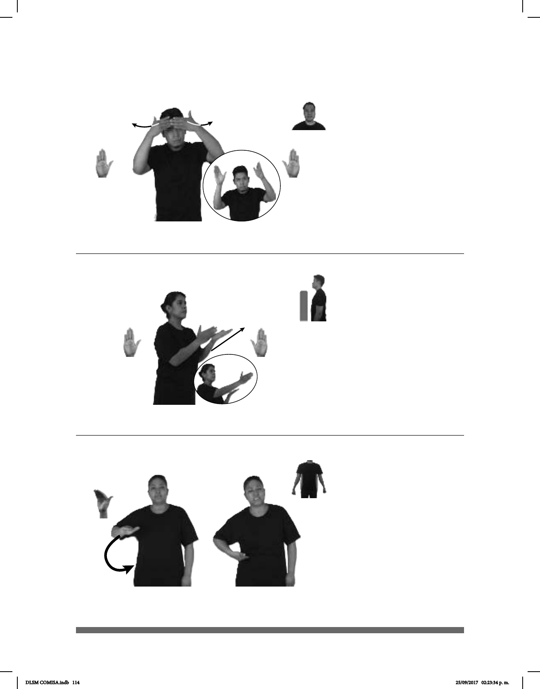

114
(B-P 11)
1
2
CONTRASEÑA CORRECTA ESCRIBIR pro-YO ACCESO NECESITAR
Escribe la contraseña correcta, necesito el acceso.
(B-P 12)
___________________________________________¡ !_
JARRÓN pro-ÉL
objeto
pro-YO ROMPER, PERDÓN, ACCIDENTE
¡Rompí el jarrón, perdón, fue un accidente!
Seña: SB
MD y MB B-P.2
MD palma hacia la izquierda,
MB palma hacia arriba.
A la altura del pecho, MD
sobre MB.
MD recto hacia enfrente.
Simula la acción de
entrar a un lugar.
1. sust. m. Entrada a un lugar;
posibilidad de alcanzar o conseguir algo o
de entrar a algún lugar. 2. sust. f. Cualidad o
propiedad que caracteriza a alguien o algo,
de llegar a él con facilidad o sencillamente.
Seña: SM
B-P.8
Palma hacia abajo.
Inicia a la altura del pecho y
termina sobre la cintura.
La mano se mueve formando
un arco.
Ojos apretados,
boca abierta mostrando los dientes, cuerpo
inclinado hacia la derecha.
Simula la acción de herirse.
sust. m. Acontecimiento
inesperado y no intencionado que altera
el curso normal de las cosas, provocando
generalmente alguna desgracia.
Seña: SS
B-P.2
Las palmas inician hacia
adentro y terminan hacia afuera.
A Ia altura de la frente.
Las manos parten de un
mismo punto y después se abren hacia
enfrente y hacia los lados.
Cabeza
adelantada, ceño ligeramente fruncido.
loc. v. Ampliar el criterio
para ayudar a averiguar la naturaleza
de las cosas.
(B-P 10)
TEMA DIFÍCIL ENTENDER pro-TÚ YA ABRE-MENTE
Abre tu mente para entender este tema difícil.
DLSM COMISA.indb 114 25/09/2017 02:23:34 p. m.